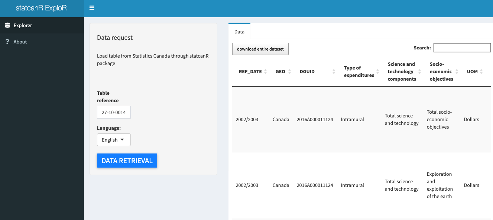

Overview
Easily connect to Statistics Canada’s Web Data Service with R. Open economic data (formerly known as CANSIM tables, now identified by Product IDs (PID)) are accessible as a data frame, directly in the user’s R environment.
Shiny App : statcanR ExploR

For people less comfortable with R and to allow more people to have access to our package, we have also developed a Shiny application.Through the same logic present in our package, researchers can retrieve data from Statistics Canada.
EpiBibR EploR is available here
Installation
The released version of statcanR package is accessible through CRAN and devtools.
install.packages("statcanR")
install.packages("devtools")
devtools::install_github('warint/statcanR')Example
This section presents an example of how to use the statcanR R package and its function statcan_data().
The following example is provided to illustrate how to use the function. It consists in collecting some descriptive statistics about the Canadian Labour Force at the federal, provincial and industrial levels, on a monthly basis.
With a simple web search ‘statistics canada wages by industry metropolitan area monthly’, the table number can easily be found on Statisitcs Canada’s webpage. Here is below a figure that illustrates this example, such as ‘27-10-0014-01’ for the Federal expenditures on science and technology, by socio-economic objectives.
Once the table number is identified, the statcan_data() function is easy to use in order to collect the data, as following:
library(statcanR)
mydata <- statcan_data("27-10-0014-01","eng")
# sqs_statcandata will be deprecated
mydata <- sqs_statcan_data("27-10-0014-01","eng")Tutorial Video
Tutorial made by Charles Saunders, Director of Master of Financial Economics Program at Western University.
Thanks Charles!
Statistics Canada Open Licence
This licence is issued on behalf of Her Majesty the Queen in Right of Canada, as represented by the Minister for Statistics Canada (“Statistics Canada”) to you (an individual or a legal entity that you are authorized to represent).
Statistics Canada may modify this licence at any time, and such modifications shall be effective immediately upon posting of the modified licence on the Statistics Canada website. Your use of the Information will be governed by the terms of the licence in force as of the date and time you accessed the Information.
Please refer to the terms of licence before using the Information.
Acknowledgment of Source according to Statistics Canada Open Licence Agreement
Statistics Canada has a specific procedure regarding the ackowledgment of source :
You shall include and maintain the following notice on all licensed rights of the Information:
Source: Statistics Canada, name of product, reference date. Reproduced and distributed on an "as is" basis with the permission of Statistics Canada.Where any Information is contained within a Value-added Product, you shall include on such Value-added Product the following notice:
Adapted from Statistics Canada, name of product, reference date. This does not constitute an endorsement by Statistics Canada of this product.Cite statcanR
To cite stantcanR package in your work:
Warin, T., Romain Le Duc (2019). statcanR: Client for Statistics Canada’s Open Economic Data. v0.1.0.
@Manual{R-statcanR,
title = {statcanR: Client for Statistics Canada's Open Economic Data},
author = {Thierry Warin and Romain {Le Duc}},
note = {R package version 0.1.0},
url = {https://github.com/warint/statcanR},
year = {2019},
doi = "10.6084/m9.figshare.10544735.v1"
}